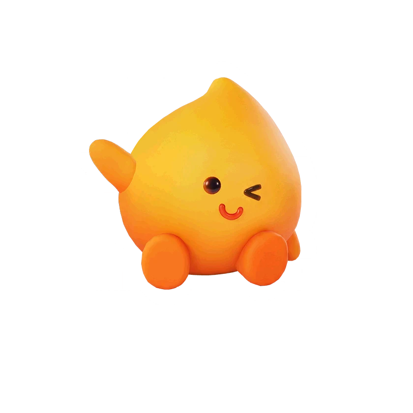

รายชื่อ Aniimo › #11001

จิตวิญญาณไฟตัวน้อย (Sparkelf)
#11001ธาตุไฟNovaSupportTier S
Sparkelf จาก SylphIsle ดึงพลังงานจากการมีปฏิสัมพันธ์กับมนุษย์และ Aniimo ยิ่งงานรื่นเริงคึกคักและสนุกเท่าไร พวกมันก็ยิ่งมีพลัง
ดูรายละเอียดเต็ม ร่างพิเศษ และร่างเปล่งประกายค่าสถานะพื้นฐาน
| HP | 107 |
|---|---|
| ATK | 113 |
| P.DEF | 60 |
| M.DEF | 88 |
| REGEN | 99 |
| BREAK | 50 |
สกิล
| โจมตีปกติ | ATK ไฟ ใช้พลังไฟโจมตีเป้าหมายจากระยะไกล |
| สกิล 1 | Inspiration ไฟ จุดไฟปลุกใจทั้งทีม เพิ่ม Fire Elemental Boost ให้ทีม 15% (+0.38% ต่อ ATK 100 สูงสุด 18%) เมื่อหมดเวลาจะคืน EP บางส่วนที่ใช้ไประหว่างผลทำงาน (ต้นทางไม่ระบุตัวเลข) อยู่ได้ 12 วินาที |
| สกิล 2 | Treat Feed ไฟ หยิบอาหารออกมาฮีลทีม 8% ของ HP ของ Sparkelf ถ้า HP ของเป้าหมายต่ำกว่า 50% หรือ 25% จะฮีล 12% หรือ 16% ของ HP ของ Sparkelf แทน |
| สกิล 3 | Spark Energy ไฟ ขว้างลูกไฟเสริมพลังที่ระเบิดเมื่อกระทบ ทำดาเมจเป็นพื้นที่และติด [Fire Debuff] 2 สแต็ก |
| อัลติเมต | Keep the Fire Bolt Going! ไฟ ปลุกความหลงใหลให้ร้อนแรง ทำดาเมจวงกว้าง และเพิ่ม Fire Elemental Boost ให้เพื่อนรอบตัว 25% (+0.63% ต่อ ATK 100 สูงสุด 30%) เป็นเวลา 30 วินาที |
งานใน Homeland
งานธาตุไฟ Lv.3